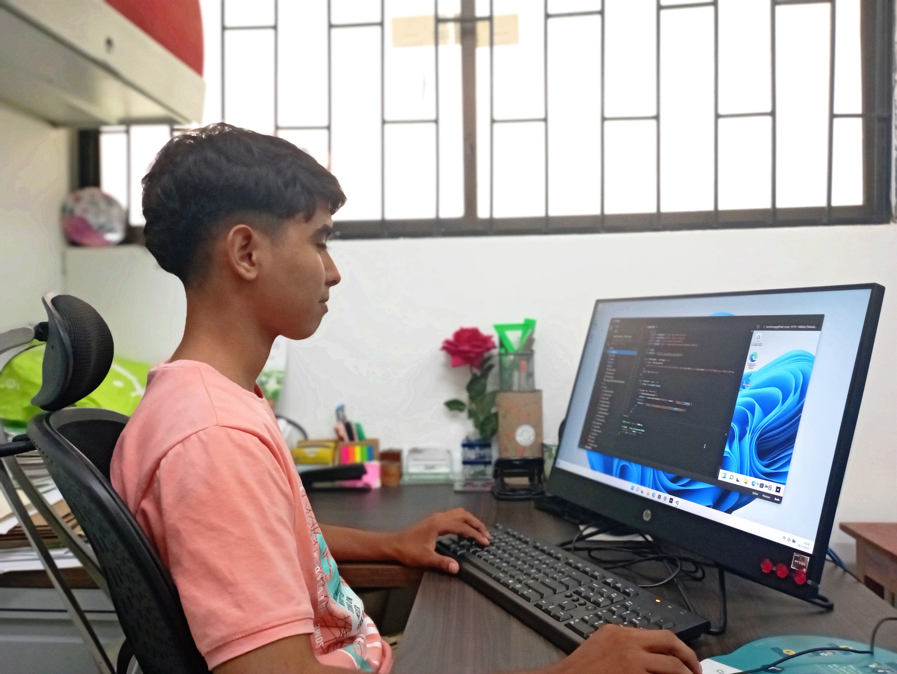

Hola 👋🏼
Soy Jose Gaspar, un apasionado desarrollador de
software siempre en busca de nuevos desafíos.
Con más de un año de experiencia en proyectos desafiantes me siento
más cómodo trabajando en el desarrollo backend.
Mi enfoque de trabajo se basa en la colaboración y el trabajo en
equipo, ya que creo que esto es fundamental para lograr resultados
exitosos.
En mi tiempo libre, me gusta trabajar en proyectos personales y
pasar tiempo con mi familia y amigos.
Yo soy

- Jose Gregorio Gaspar Lopez
- a.k.a. Jose Gaspar
- a.k.a. devgaspar
- Nací en Colombia. Agosto 29, 2004
- Vivo en Monteria, Cordoba
- jgasparlopez29@gmail.com
- +57-3116347712
- devgaspar.tech
- CV
Acerca
Desde el 2020, mi pasión por la programación se ha convertido en mi
carrera. Inspirado por la posibilidad de crear cualquier cosa que
imagine, decidí convertirme en desarrollador de software.
Como desarrollador, tengo una buena lógica y habilidades para buscar
soluciones a los problemas. Me especializo en el desarrollo backend,
y he trabajado con tecnologías como Java, Springboot y el stack
MERN.
Uno de mis proyectos favoritos es la tienda virtual Moreyl, donde
pude aplicar mis habilidades en el desarrollo backend y crear una
solución que ayudó a mejorar el negocio de mi hermana.
Me enorgullece destacar la empatía como habilidad esencial en el
mundo del desarrollo de software. Mi meta es convertirme en uno de
los mejores desarrolladores en Colombia y estoy buscando
oportunidades de trabajo y colaboraciones para lograrlo.
Educación
- Eterno Autodidacta.
-
Analizis y Desarrollo de Software (2022 - Actualidad) en
Servicio Nacional de Aprendizaje
(Cédula 1064980429).
-
Desarrollo de Software (2020 - 2022) en
Universidad de Antioquia
(Cédula 1064980429).
-
Ingeniería en Sistemas (2020 - Actualidad) en
Universidad de Cordoba
(Cédula 1064980429).
¿Qué hago?
Creo que la imaginación no tiene límites y que cualquier cosa que
puedas imaginar la puedes programar. Como desarrollador de
software, me apasiona encontrar soluciones efectivas y eficientes
para cualquier desafío que se presente. Con habilidades en
empatía, paciencia y lógica, creo que estas habilidades son
esenciales para el éxito en el desarrollo.
Te ofrezco
-
Desarrollo backend/frontend utilizando tecnologías como Java
Springboot, Python y el stack MERN.
-
Experiencia en bases de datos relacionales y no relacionales, así
como en la integración de API.
-
Enfoque en un trabajo estructurado y bien organizado para lograr
los objetivos del proyecto de manera eficiente.
Si puedes imaginarlo, ¡puedo programarlo! Si te interesa trabajar
conmigo o conocer más sobre mis servicios, no dudes en escribirme a:
📨
jgasparlopez29@gmail.com
Mis Redes